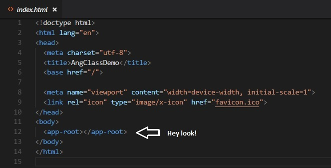

We've heard the term component thrown around quite a bit, but now it's time to go over what exactly components are, and how to build one. Let's look at a sample component and check out all the parts that go into to a component.
You may recognize some parts after we went over modules. Let's go over them in more detail.
One more thing worth mentioning, if you do not include the prefix that would declared earlier, your linter will complain. I used the default prefix, so every component I make has to start with 'app-'.
When you look at examples of component code, you made notice that instead of linking a file via templateUrl, they use template, and actually write the html inside the ts. Don't do this. It works fine for small examples, but in development you will almost never do this, and as you are starting out, the practice of linking your html is quite important.
How often do you use multiple css files in a component?
In my (still limited) experience, I have yet to do so. I tend to put any class names that I want to use over multiple components inside the global styles.css. When we get into parent/child components, I can see this being useful.
So all the fun TS we've been applying over the first few lessons go inside here. You'll see variable declaration, the constructor, and a method. Now we can import this component wherever we want.
Now if I want to call this component, it will display the HTML and apply the linked CSS and our TS to it. And since we gave the name app-root in the selector, we would call this component using the html tag <app-root>
In fact, if we look at the html of the stock app, you should see this...
There's our component!
I mentioned last lesson how important it is to practice some of these things because not only the concept can be daunting, but the concepts are fundamental to how Angular works. Try creating a new component, creating an HTML and CSS file, import the component in your module and finally use the custom tag to display your component. It may take 3, 4, or even ten tries, but make sure you feel comfortable with component creation.
Can I have multiple components displaying on one page?
Yes, will become commonplace in more complex projects. Let's give that a shot... in the next lesson!